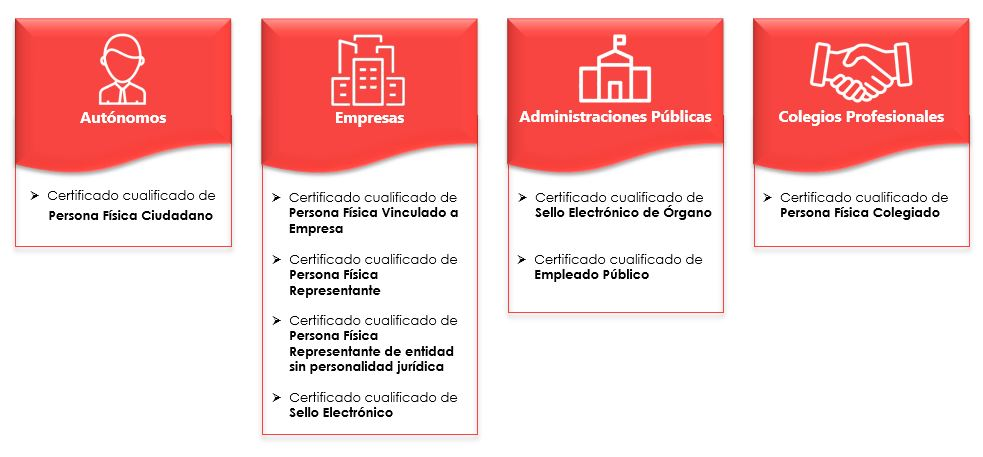

Tipos, ventajas y recomendaciones.
Tipos de Certificados Digitales.
Según el Reglamento (UE) No 910/2014 del Parlamento Europeo y del Consejo de 23 de julio de 2014 (eIDAS), los certificados digitales se clasifican en niveles. A continuación, describo los dos niveles principales:
Nivel 1 - Clasificación según el tipo de identidad:
Certificado de persona física: Identifica a una persona individual.
Certificado de representante de persona jurídica: Se emite a personas físicas que actúan como representantes de entidades jurídicas.
Certificado de representante de entidad sin personalidad jurídica: Se otorga a personas físicas que representan a entidades sin personalidad jurídica en asuntos tributarios y otros definidos por la legislación vigente.
Certificado de funcionario de la Administración Pública.
Nivel 2 - Clasificación según el ámbito de aplicación:
Relacionado con diversas entidades privadas que ejercen este tipo de funciones.
¿Qué tipo de certificado digital es el más adecuado?

Ventajas de los certificados digitales.
- Teletrabajo: La identificación telemática es la solución para que trabajadores por cuenta propia o ajena, colegiados y empleados públicos puedan continuar prestando sus servicios y relacionándose mediante transacciones seguras, incluso en la modalidad de trabajo en remoto.
- Ahorra tiempo: Podrás invertirlo en tu negocio. Gracias al certificado, podrás realizar múltiples trámites online con las Administraciones Públicas, sin necesidad de desplazarte y sin colas.
- Optimización de la gestión: La información se guarda directamente en la aplicación, evitando que debas custodiar los contratos durante años.
- Cero papel: La emisión de certificados digitales permite implementar políticas de responsabilidad social ambiental. Toda la información del registro y el contrato de emisión se firma electrónicamente, sin impresión en papel.